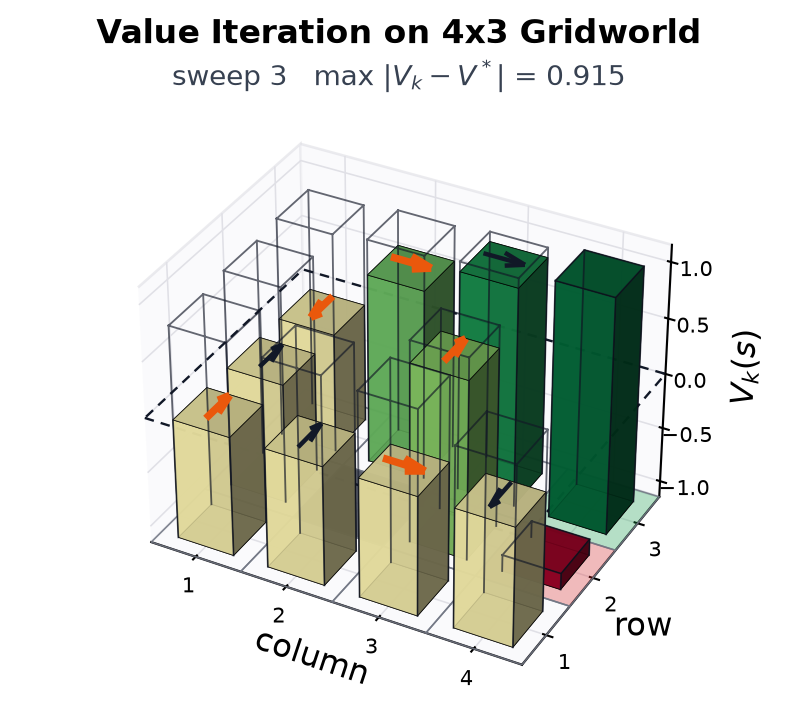
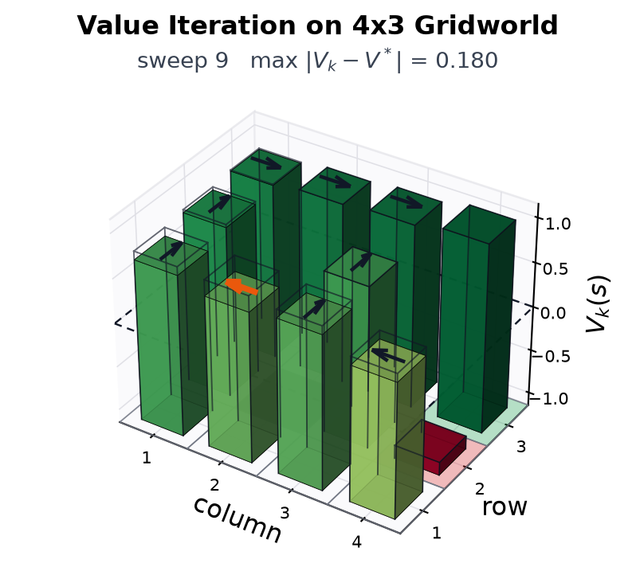
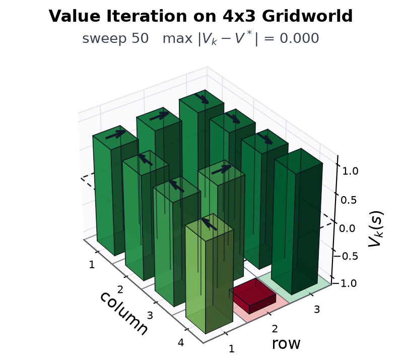
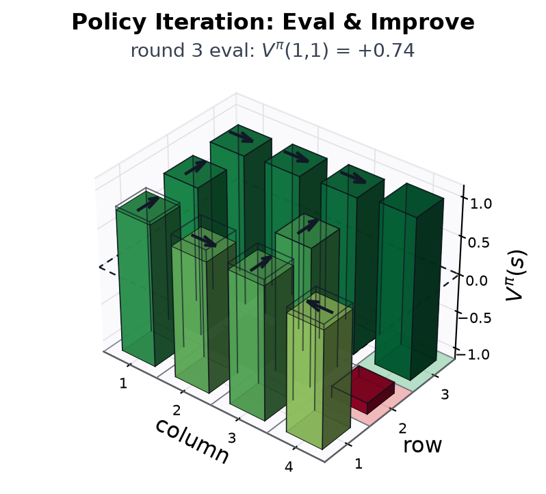
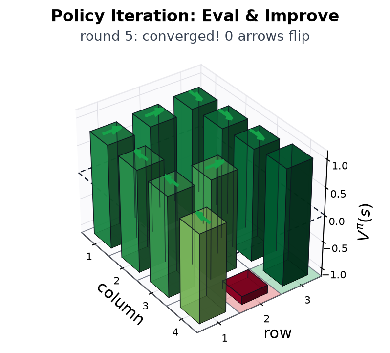
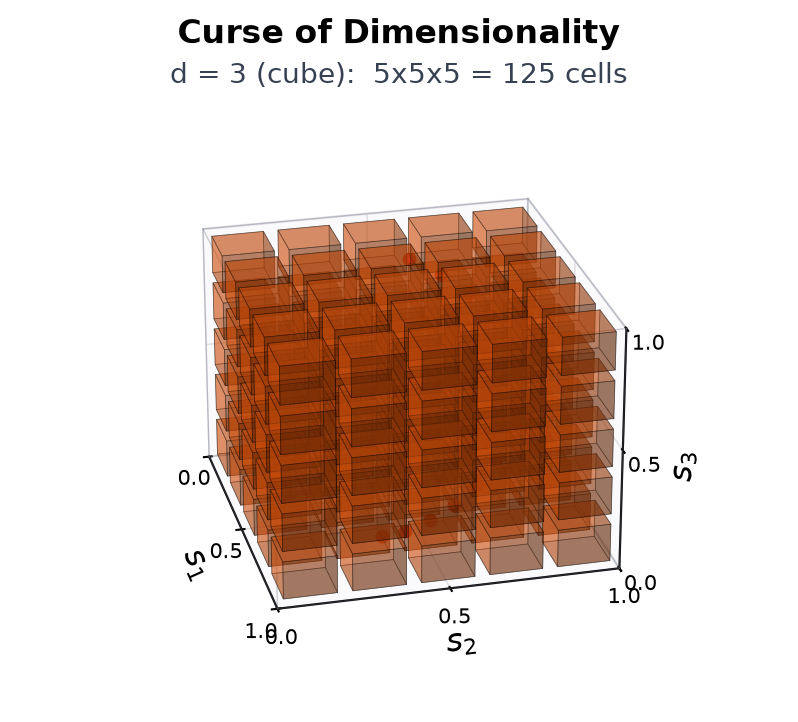
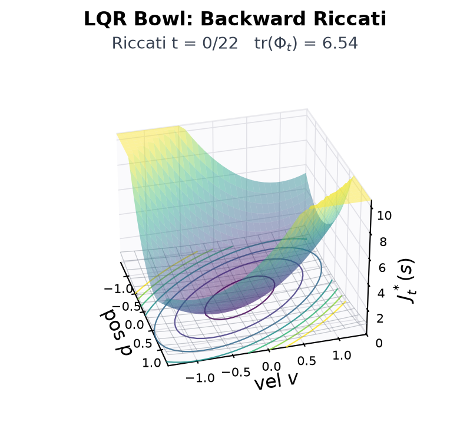
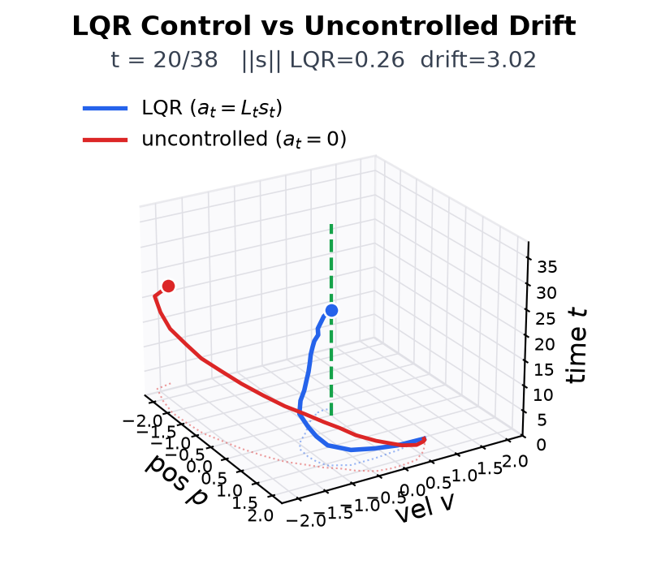
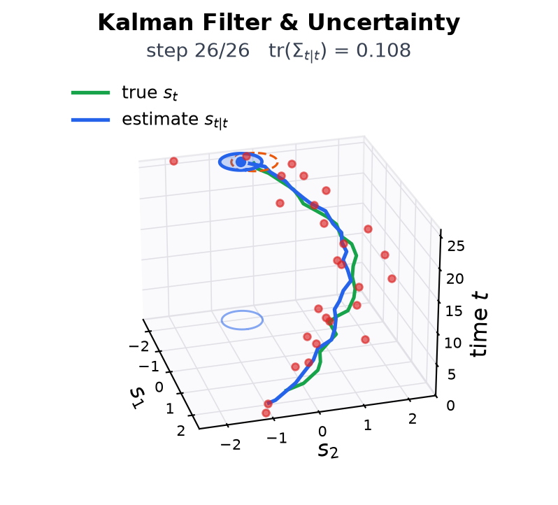
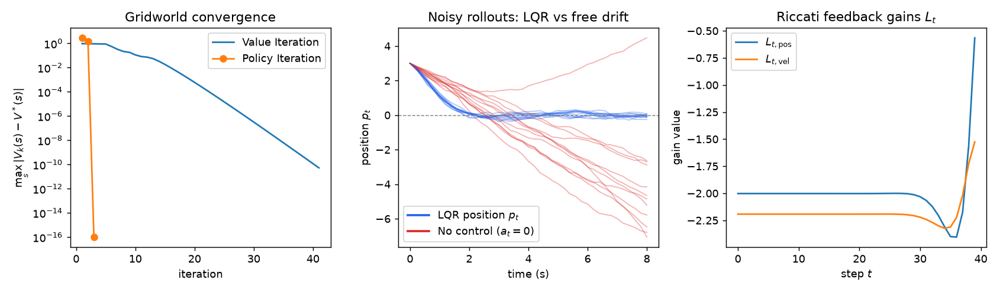

Value Iteration, Policy Iteration, LQR और LQG
Theory
इस lecture में: Finite MDPs को हल करने वाले दो मुख्य algorithms (Value Iteration और Policy Iteration) और उनकी तुलना, data से counts गिनकर MDP का model सीखना, continuous states का discretization और curse of dimensionality, finite-horizon MDPs में backward dynamic programming, Linear Quadratic Regulation (LQR) में quadratic costs और Riccati recursion, noise से स्वतंत्र linear feedback policy \(a_t = L_t s_t\), और अधूरी जानकारी (noisy observations) में Kalman filter व separation principle के साथ LQG।
1. एक line में idea
Lecture 16 में आपने देखा कि किसी MDP की सबसे अच्छी policy \(\pi^*\) निकालने की कुंजी optimal value function \(V^*\) है, जो Bellman optimality equation को संतुष्ट करता है। समस्या यह थी कि उस equation में \(\max_a\) आता है, इसलिए वह linear system नहीं रहती।
इस lecture के दो बड़े हिस्से हैं। पहला: छोटे finite state set के लिए हम Bellman update को बार-बार चलाकर (Value Iteration) या evaluation और improvement की जोड़ी चलाकर (Policy Iteration) ठीक \(V^*\) और \(\pi^*\) निकाल सकते हैं। दूसरा: जब states continuous हों (जैसे robot या helicopter की position और velocity), तो grid बनाना curse of dimensionality में फँस जाता है; वहाँ अगर dynamics linear हों और cost quadratic हो (LQR / LQG), तो Riccati recursion और Kalman filter बिना किसी grid के exact optimal control दे देते हैं।
2. Tabular MDPs को हल करना: Value Iteration और Policy Iteration
याद दिला दें कि finite MDP \((S, A, \{P_{sa}\}, \gamma, R)\) में optimal value function \(V^*\) के लिए हर state \(s \in S\) पर यह शर्त लागू होती है:
\[V^*(s) = R(s) + \max_{a \in A}\, \gamma \sum_{s' \in S} P_{sa}(s')\, V^*(s')\]
एक बार \(V^*\) मिल जाए, तो हर state के लिए सबसे अच्छा action तुरंत निकल आता है:
\[\pi^*(s) = \arg\max_{a \in A} \sum_{s' \in S} P_{sa}(s')\, V^*(s')\]
अब सवाल यह है कि \(V^*\) या \(\pi^*\) तक पहुँचा कैसे जाए। इसके दो क्लासिक तरीके हैं।
Value Iteration
सबसे सीधा विचार यह है: Bellman optimality equation के बाएँ-दाएँ की बराबरी को एक assignment update बना दें।
- हर state \(s \in S\) के लिए \(V(s) := 0\) रखें।
- जब तक \(V\) converge न हो जाए, हर state \(s\) के लिए update करें:
\[V(s) := R(s) + \max_{a \in A}\, \gamma \sum_{s' \in S} P_{sa}(s')\, V(s')\]
- अंत में \(\pi(s) := \arg\max_{a \in A} \sum_{s'} P_{sa}(s')\, V(s')\) निकाल लें।
Step 2 को लागू करने के दो ढंग हैं:
- Synchronous update: नया vector \(V_{k+1}\) पूरा का पूरा पुराने vector \(V_k\) से गिनें, और सब states एक साथ बदलें। इसे matrix-vector रूप में लिखना बहुत आसान है।
- Asynchronous (in-place) update: states पर किसी क्रम में घूमें और जैसे ही किसी \(s\) का नया \(V(s)\) निकले, उसे तुरंत उसी array में लिख दें ताकि अगले state की गिनती ताज़ा मान इस्तेमाल कर सके।
दोनों ही तरीकों में \(V \to V^*\) पक्का है। क्यों? मान लीजिए Bellman optimality operator को \(B\) कहें, यानी \((BV)(s) = R(s) + \gamma \max_a \sum_{s'} P_{sa}(s') V(s')\)। किसी भी दो functions \(U\) और \(V\) के लिए \(\max_a f(a) - \max_a g(a) \le \max_a |f(a) - g(a)|\) वाली असमानता लगाने पर मिलता है:
\[\max_{s \in S} |BV(s) - BU(s)| \le \gamma \max_{s \in S} |V(s) - U(s)|\]
चूँकि \(\gamma < 1\) है, \(B\) sup-norm में एक \(\gamma\)-contraction है। और \(V^*\) इसका fixed point है (\(BV^* = V^*\)), इसलिए हर synchronous sweep में सबसे बड़ी गलती कम से कम \(\gamma\) गुना छोटी हो जाती है: \(\max_s |V_k(s) - V^*(s)| \le \gamma^k \max_s |V_0(s) - V^*(s)|\)। जैसे Lecture 16 के 4x3 gridworld में शुरू में सिर्फ़ \(+1\) और \(-1\) वाले terminal states गैर-शून्य होते हैं, और हर अगले sweep में उनकी जानकारी एक-एक कदम बाहर फैलती जाती है।
Policy Iteration
Value Iteration में \(V\) धीरे-धीरे \(V^*\) की ओर रेंगता है, जबकि सही policy \(\pi^*\) अक्सर \(V\) के पूरी तरह converge होने से बहुत पहले ही तय हो जाती है। Policy Iteration सीधे policy पर काम करता है:
- कोई भी शुरुआती policy \(\pi\) चुन लें।
- जब तक \(\pi\) बदलना बंद न कर दे, ये दो कदम दोहराएँ: - (क) Policy Evaluation: वर्तमान \(\pi\) को स्थिर मानकर \(V := V^\pi\) निकालें। इसके लिए Lecture 16 वाला linear system \((I - \gamma P^\pi) V = R\) सीधे हल कर सकते हैं (या कुछ iterative sweeps चला सकते हैं)। - (ख) Policy Improvement: हर state \(s\) में \(V^\pi\) के सापेक्ष greedy action चुनें:
\[\pi_{\text{new}}(s) := \arg\max_{a \in A} \sum_{s' \in S} P_{sa}(s')\, V^\pi(s')\]
फिर \(\pi := \pi_{\text{new}}\) रखें।
यह हमेशा सही \(\pi^*\) पर क्यों रुकता है? मान लीजिए पुराने \(\pi\) से नया \(\pi_{\text{new}}\) बना। परिभाषा से हर state \(s\) पर \(\sum_{s'} P_{s\pi_{\text{new}}(s)}(s') V^\pi(s') \ge \sum_{s'} P_{s\pi(s)}(s') V^\pi(s')\) है। दोनों तरफ़ \(\gamma\) से गुणा करके \(R(s)\) जोड़ें तो \(R(s) + \gamma (P^{\pi_{\text{new}}} V^\pi)(s) \ge V^\pi(s)\) मिलता है। इस असमानता को बार-बार आगे बढ़ाने पर साबित होता है कि हर state में \(V^{\pi_{\text{new}}}(s) \ge V^\pi(s)\) (monotonic improvement)। Finite MDP में कुल \(|A|^{|S|}\) ही policies संभव हैं, और जब \(\pi_{\text{new}} = \pi\) हो जाए तो \(V^\pi\) स्वयं Bellman optimality equation को संतुष्ट कर देता है, यानी \(V^\pi = V^*\) और \(\pi = \pi^*\)।
दोनों की तुलना: कब कौन-सा चुनें?
| पहलू | Value Iteration | Policy Iteration |
|---|---|---|
| एक iteration का काम | सस्ता sweep: \(O(|A|\,|S|^2)\) | महँगा exact evaluation: linear solve \(O(|S|^3)\) |
| कुल iterations | ज़्यादा (\(\gamma\) 1 के पास हो तो सैकड़ों) | बहुत कम (अक्सर 3 से 15 में खत्म) |
| छोटा या मध्यम \(|S|\) | ठीक है | बहुत तेज़ और exact |
| बहुत बड़ा \(|S|\) | बेहतर, क्योंकि matrix inverse नहीं चाहिए | Exact solve महँगा; तब कुछ sweeps ही करते हैं |
3. जब Model पता न हो: Data से \(P_{sa}\) और \(R\) सीखना
असली दुनिया में कोई आपको \(P_{sa}\) की तालिका हाथ में नहीं पकड़ाता। पर अगर आप दुनिया (या simulator) में policy चलाकर अनुभव के टुकड़े (trajectories) इकट्ठे कर सकें:
\[s_0^{(j)} \xrightarrow{a_0^{(j)}} s_1^{(j)} \xrightarrow{a_1^{(j)}} s_2^{(j)} \dots\]
तो \(P_{sa}(s')\) का maximum likelihood estimate सीधा गिनती का अनुपात है:
\[\hat{P}_{sa}(s') = \frac{\text{state } s \text{ में action } a \text{ लेकर } s' \text{ पर पहुँचने की गिनती}}{\text{state } s \text{ में action } a \text{ लेने की कुल गिनती}}\]
अगर किसी \((s, a)\) जोड़ी को अभी एक बार भी नहीं आज़माया गया है (यानी अनुपात \(0/0\) हो जाए), तो शुरुआती अंदाज़े के तौर पर सभी states पर एकसमान संभावना \(\hat{P}_{sa}(s') = \frac{1}{|S|}\) मान लेते हैं। इसी तरह अगर \(R(s)\) भी अज्ञात हो, तो state \(s\) में दिखे rewards का औसत ही \(\hat{R}(s)\) बन जाता है।
इसके बाद हम model-based RL का चक्र चला सकते हैं:
- वर्तमान policy \(\pi\) को कुछ episodes तक चलाकर अनुभव जोड़ें।
- सारा पुराना और नया अनुभव मिलाकर \(\hat{P}_{sa}\) और \(\hat{R}\) update करें।
- इस सीखे हुए MDP पर Value Iteration या Policy Iteration चलाकर नई policy \(\pi\) निकालें (पिछले \(V\) से शुरुआत करने पर Value Iteration बहुत तेज़ चलता है)।
- वापस Step 1 पर जाएँ। ध्यान रहे: Step 1 में हमेशा निरे greedy तरीके से \(\pi(s)\) ही लेते रहे तो कई अच्छे रास्ते कभी जाँचे ही नहीं जाएँगे। इसलिए थोड़ा exploration जोड़ते हैं, जैसे \(\epsilon\)-greedy चाल (छोटी probability \(\epsilon\) से random action लेना)।
4. Continuous State Spaces: Discretization और Curse of Dimensionality
अब तक \(S\) गिनी-चुनी states का set था। पर एक कार में state \((x, y, \theta, \dot{x}, \dot{y}, \dot{\theta}) \in \mathbb{R}^6\) है, inverted pendulum (cart-pole) में \((x, \dot{x}, \theta, \dot{\theta}) \in \mathbb{R}^4\) है, और उड़ते helicopter में 3D position, orientation और उनके velocities मिलाकर \(s \in \mathbb{R}^{12}\) होता है।
पहला स्वाभाविक विचार discretization है: हर coordinate की सीमा को \(k\) बराबर टुकड़ों (bins) में काट दें, ताकि पूरा \(\mathbb{R}^d\) छोटे डिब्बों (cells) में बँट जाए और हर डिब्बे को एक discrete state \(\bar{s}\) मानकर Value Iteration चला दें।
यह तरीका \(d = 1\) या \(d = 2\) पर काम चल जाता है, पर आयाम बढ़ते ही दो गंभीर अड़चनें आती हैं:
- खुरदरा representation: Discretization मान लेता है कि एक पूरे डिब्बे के भीतर \(V^*(s)\) सपाट (piecewise constant) है। चिकनी ढलान को पकड़ने के लिए बारीक जाल (बड़ा \(k\)) चाहिए।
- Curse of Dimensionality: अगर \(d\) आयामों में हर अक्ष पर \(k\) bins रखे जाएँ, तो कुल discrete states की संख्या घातीय (exponential) रफ़्तार से विस्फोट करती है:
\[|S| = k^d\]
एक सरल उदाहरण देखिए: \(k = 10\) मामूली bins रखने पर \(d = 1\) (रेखा) में \(10\) cells हैं, \(d = 2\) (वर्ग) में \(100\), \(d = 3\) (घन) में \(1{,}000\), पर helicopter के \(d = 12\) आयामों में \(10^{12}\) (एक खरब!) states बन जाते हैं। न इतनी बड़ी तालिका memory में आ सकती है, न उस पर एक भी Bellman sweep चल सकता है, और न ही हर डिब्बे में पर्याप्त data इकट्ठा हो सकता है। इसलिए बड़े continuous control problems में हमें बिना जाल बिछाए सीधे \(V\) का smooth रूप ढूँढना पड़ता है।
5. Finite-Horizon MDPs और Backward Dynamic Programming
Continuous control के सबसे सुंदर exact हल (LQR) पर जाने से पहले हमें infinite horizon की जगह finite-horizon MDP \((S, A, P_{sa}^{(t)}, T, R^{(t)})\) समझना होगा। यहाँ खेल ठीक \(T\) कदमों पर रुक जाता है और कुल payoff यह है:
\[R^{(0)}(s_0, a_0) + R^{(1)}(s_1, a_1) + \dots + R^{(T-1)}(s_{T-1}, a_{T-1}) + R^{(T)}(s_T)\]
योग परिमित है, इसलिए \(\gamma\) की ज़रूरत नहीं (\(\gamma = 1\) मान सकते हैं)। ध्यान दें कि dynamics \(P_{sa}^{(t)}\) और reward \(R^{(t)}\) समय \(t\) के साथ बदल भी सकते हैं।
यहाँ एक बड़ा बदलाव आता है: optimal policy अब समय \(t\) पर निर्भर करती है (\(\pi_t^* : S \to A\), यानी non-stationary policy)। क्यों? अगर आपके पास 50 कदम बचे हैं तो आप दूर के बड़े लक्ष्य की ओर जाएँगे, पर अगर सिर्फ़ 1 कदम बचा है तो पास का छोटा इनाम बटोरना बेहतर है।
समय \(t\) पर state \(s\) से आगे के कुल optimal expected payoff को \(V_t^*(s)\) कहें। इसे अंत से शुरू करके backward dynamic programming से ठीक हल किया जाता है:
- अंतिम कदम (\(t = T\)): आगे कोई action नहीं बचा, इसलिए
\[V_T^*(s) = R^{(T)}(s)\]
- पीछे की ओर कदम (\(t = T-1, T-2, \dots, 0\)): जब \(V_{t+1}^*\) पहले से पता हो, तब
\[V_t^*(s) = \max_{a \in A} \left[ R^{(t)}(s, a) + \mathbb{E}_{s' \sim P_{sa}^{(t)}}\!\left[ V_{t+1}^*(s') \right] \right]\]
और उसी कदम पर सबसे अच्छा action \(\pi_t^*(s)\) वह \(a\) है जो ऊपर वाला \(\max\) हासिल करता है।
6. Linear Quadratic Regulation (LQR)
अब मान लीजिए state \(s_t \in \mathbb{R}^n\) और action \(a_t \in \mathbb{R}^d\) दोनों continuous vectors हैं। LQR में दो चीज़ें मानी जाती हैं:
(1) Linear dynamics + Gaussian noise:
\[s_{t+1} = A s_t + B a_t + w_t, \qquad w_t \sim \mathcal{N}(0, \Sigma_w)\]
जहाँ \(A \in \mathbb{R}^{n \times n}\), \(B \in \mathbb{R}^{n \times d}\), और \(w_t\) हर कदम पर स्वतंत्र Gaussian झटका है। (अगर असली प्रणाली nonlinear हो, जैसे \(s_{t+1} = f(s_t, a_t) + w_t\), तो किसी संतुलन बिंदु \(\bar{s}, \bar{a}\) के आस-पास प्रथम Taylor प्रसार लेकर उसे लगभग इसी रूप में लाया जा सकता है।)
(2) Quadratic cost: हम चाहते हैं कि state भी मूल-बिंदु \(0\) के पास रहे और ताक़त (\(a_t\)) भी बेवजह ज़्यादा खर्च न हो। कदम \(t < T\) पर खर्च \(c_t(s_t, a_t) = s_t^T U s_t + a_t^T W a_t\) है और अंतिम कदम पर \(c_T(s_T) = s_T^T U_T s_T\), जहाँ \(U, U_T \succeq 0\) symmetric positive semi-definite हैं और \(W \succ 0\) symmetric positive definite है। Reward के रूप में लिखें तो \(R^{(t)}(s_t, a_t) = -c_t(s_t, a_t)\) है। सुविधा के लिए हम \(J_t^*(s_t) = -V_t^*(s_t)\), यानी optimal cost-to-go को minimize करेंगे।
Riccati Recursion की व्युत्पत्ति
कमाल की बात यह है कि हर कदम \(t\) पर \(J_t^*(s)\) एक शुद्ध quadratic कटोरा निकलता है:
\[J_t^*(s_t) = s_t^T \Phi_t s_t + \psi_t\]
जहाँ \(\Phi_t \succeq 0\) एक \(n \times n\) symmetric matrix है और \(\psi_t \ge 0\) एक संख्या। इसे \(t = T\) से पीछे चलते हुए induction से सिद्ध करते हैं।
आधार (\(t = T\)): \(J_T^*(s_T) = s_T^T U_T s_T\), इसलिए \(\Phi_T = U_T\) और \(\psi_T = 0\)।
पीछे का कदम (\(t+1 \to t\)): मान लें \(J_{t+1}^*(s_{t+1}) = s_{t+1}^T \Phi_{t+1} s_{t+1} + \psi_{t+1}\) सही है। चूँकि \(s_{t+1} = A s_t + B a_t + w_t\) में \(\mathbb{E}[w_t] = 0\) है, बीच का cross term शून्य हो जाता है, और quadratic noise term के लिए trace पहचान \(\mathbb{E}[w^T \Phi w] = \mathbb{E}[\text{tr}(w^T \Phi w)] = \text{tr}(\Phi \mathbb{E}[w w^T]) = \text{tr}(\Phi \Sigma_w)\) लगती है:
\[\mathbb{E}_{w_t}\!\left[ J_{t+1}^*(s_{t+1}) \right] = (A s_t + B a_t)^T \Phi_{t+1} (A s_t + B a_t) + \text{tr}(\Phi_{t+1}\Sigma_w) + \psi_{t+1}\]
अतः Bellman समीकरण बनता है:
\[J_t^*(s_t) = \min_{a_t} \left[ s_t^T U s_t + a_t^T W a_t + (A s_t + B a_t)^T \Phi_{t+1} (A s_t + B a_t) + \text{tr}(\Phi_{t+1}\Sigma_w) + \psi_{t+1} \right]\]
कोष्ठक के अंदर का व्यंजक \(a_t\) में strictly convex quadratic है (क्योंकि \(W \succ 0\) और \(B^T \Phi_{t+1} B \succeq 0\))। \(a_t\) के सापेक्ष gradient को शून्य रखें:
\[\nabla_{a_t}[\dots] = 2 W a_t + 2 B^T \Phi_{t+1} (A s_t + B a_t) = 0 \quad\Longrightarrow\quad (W + B^T \Phi_{t+1} B)\, a_t = -B^T \Phi_{t+1} A s_t\]
इससे तुरंत optimal action का सूत्र मिल जाता है:
\[a_t^* = L_t s_t, \qquad L_t = -(W + B^T \Phi_{t+1} B)^{-1} B^T \Phi_{t+1} A\]
इस \(a_t^* = L_t s_t\) को वापस \(J_t^*(s_t)\) में रखने पर \(s_t^T \Phi_t s_t + \psi_t\) का रूप बना रहता है, और हमें प्रसिद्ध Discrete Riccati Recursion मिलती है:
\[\Phi_t = U + A^T \Phi_{t+1} A - A^T \Phi_{t+1} B (W + B^T \Phi_{t+1} B)^{-1} B^T \Phi_{t+1} A\]
\[\psi_t = \psi_{t+1} + \text{tr}(\Phi_{t+1}\Sigma_w)\]
LQR के दो गहरे निष्कर्ष
- Linear feedback पर्याप्त है: Optimal action बस वर्तमान state का एक matrix गुणा \(a_t^* = L_t s_t\) है। किसी discretization या बड़ी तालिका की ज़रूरत नहीं पड़ी: \(n\) आयामों में सिर्फ़ \(n \times n\) की matrices उलटनी और गुणा करनी पड़ती हैं।
- Optimal policy noise \(\Sigma_w\) से पूरी तरह स्वतंत्र है! ध्यान से देखिए: न \(\Phi_t\) के सूत्र में और न \(L_t\) के सूत्र में \(\Sigma_w\) कहीं आता है। Noise जितना बड़ा होगा, \(\psi_t\) के ज़रिए कुल अपेक्षित खर्च \(J_t^*(s_t)\) उतना ऊपर खिसक जाएगा, पर कटोरे की ढलान (\(\Phi_t\)) और उसकी तली तक पहुँचाने वाला सबसे अच्छा action (\(L_t s_t\)) ज़रा भी नहीं बदलता।
7. LQG, Kalman Filter और Separation Principle
LQR में हमने मान लिया था कि हर कदम पर असली state \(s_t\) साफ़-साफ़ दिखता है। वास्तविक प्रणालियों में sensors भी noisy और अधूरे होते हैं (यह एक POMDP, यानी Partially Observable MDP है): उदाहरण के लिए radar सिर्फ़ दूरी नापता है, वेग नहीं, और उस नाप में भी शोर होता है।
Linear Quadratic Gaussian (LQG) मॉडल में linear dynamics के साथ एक linear observation समीकरण जुड़ता है:
\[s_{t+1} = A s_t + B a_t + w_t, \qquad w_t \sim \mathcal{N}(0, \Sigma_w)\]
\[y_t = C s_t + v_t, \qquad v_t \sim \mathcal{N}(0, \Sigma_v)\]
जहाँ \(y_t \in \mathbb{R}^m\) कदम \(t\) पर मिला मापन है, और \(s_0 \sim \mathcal{N}(s_{0|-1}, \Sigma_{0|-1})\) शुरुआती जानकारी है।
चूँकि सारी क्रियाएँ linear हैं और सारे शोर Gaussian हैं, अब तक के सारे मापनों और actions के बाद असली state का posterior बंटन हमेशा एक सटीक Gaussian बना रहता है:
\[s_t \mid y_0, \dots, y_t, a_0, \dots, a_{t-1} \;\sim\; \mathcal{N}(s_{t|t},\, \Sigma_{t|t})\]
Kalman Filter: Predict और Update के दो कदम
माध्य \(s_{t|t}\) और अनिश्चितता \(\Sigma_{t|t}\) को Kalman Filter हर कदम पर दो हिस्सों में आगे बढ़ाता है:
- Predict कदम (\(t \to t+1\), नया मापन \(y_{t+1}\) देखने से पहले): Dynamics से अंदाज़ा आगे बढ़ाएँ; अनिश्चितता \(A\) के साथ खिंचती है और \(\Sigma_w\) जुड़ने से फैलती है:
\[s_{t+1|t} = A s_{t|t} + B a_t, \qquad \Sigma_{t+1|t} = A \Sigma_{t|t} A^T + \Sigma_w\]
- Update कदम (\(y_{t+1}\) दिखने पर): अपेक्षित मापन \(C s_{t+1|t}\) और असली मापन \(y_{t+1}\) के अंतर (innovation) से अनुमान सुधारें। पहले Kalman gain \(K_{t+1}\) निकालें:
\[K_{t+1} = \Sigma_{t+1|t} C^T \left( C \Sigma_{t+1|t} C^T + \Sigma_v \right)^{-1}\]
फिर नया posterior माध्य और छोटी हुई covariance अद्यतन करें:
\[s_{t+1|t+1} = s_{t+1|t} + K_{t+1}\left( y_{t+1} - C s_{t+1|t} \right), \qquad \Sigma_{t+1|t+1} = (I - K_{t+1} C)\, \Sigma_{t+1|t}\]
सीमांत स्थितियों में यह सूत्र सहज समझ से मेल खाता है: अगर sensor बहुत साफ़ है (\(\Sigma_v \to 0\)) तो \(K_{t+1}\) मापन पर पूरा भरोसा करता है; अगर sensor बहुत शोरगुल वाला है (\(\Sigma_v\) बहुत बड़ा) तो \(K_{t+1} \to 0\) होकर अनुमान \(s_{t+1|t}\) के पास ही टिका रहता है।
Separation Principle (Certainty Equivalence)
सामान्य POMDPs को हल करना बेहद कठिन होता है क्योंकि वहाँ action को दो काम एक साथ करने पड़ते हैं: इनाम कमाना और जानकारी जुटाना। पर LQG में Separation Principle लागू होता है: अनुमान (estimation) और नियंत्रण (control) पूरी तरह अलग हो जाते हैं! LQG का exact optimal algorithm बस यह है:
- सारे शोर (\(\Sigma_w, \Sigma_v\)) को भूलकर सामान्य LQR की Riccati recursion से \(L_0, \dots, L_{T-1}\) पहले ही गिन लें।
- चलते समय हर कदम \(t\) पर Kalman filter से नवीनतम माध्य \(s_{t|t}\) निकालें।
- मान लें कि यही असली state है, और सीधे यह action लगा दें:
\[a_t^* = L_t\, s_{t|t}\]
ऐसा इसलिए संभव होता है क्योंकि \(L_t\) शोर पर निर्भर नहीं करता और Kalman covariance \(\Sigma_{t|t}\) आपके चुने हुए actions \(a_t\) पर निर्भर नहीं करती (कोई भी action अनिश्चितता के अंडाकार को छोटा या बड़ा नहीं कर सकता)।
8. Practical बातें और आम गलतियाँ
- Policy convergence बनाम Value convergence: Value Iteration में जब \(\max_s |V_{k+1}(s) - V_k(s)|\) छोटा हो तब भी रुकने की शर्त \(\epsilon (1-\gamma)/(2\gamma)\) जैसी रखनी चाहिए क्योंकि \(\gamma\) 1 के करीब होने पर छोटे कदम भी जुड़कर बड़ा अंतर बना सकते हैं। हालांकि नीति \(\pi_k\) अक्सर बहुत पहले ही \(\pi^*\) बन चुकी होती है।
- \(W \succ 0\) की शर्त ज़रूरी है: LQR में अगर action पर कोई कीमत न हो (\(W = 0\)) और \(B^T \Phi_{t+1} B\) singular हो जाए, तो \((W + B^T \Phi_{t+1} B)^{-1}\) टूट जाता है और असीमित बड़ा झटका (\(a_t \to \infty\)) माँगने लगता है।
- Riccati की दिशा न उलटें: Riccati समीकरण हमेशा \(t = T\) से \(t = 0\) की ओर पीछे चलती है, जबकि Kalman filter और वास्तविक नियंत्रण \(t = 0\) से \(t = T\) की ओर आगे चलते हैं।
- Nonlinear प्रणालियों में स्थानीय वैधता: संतुलन बिंदु के आस-पास Taylor linearization से निकला LQR तभी तक अच्छा काम करता है जब तक प्रणाली उस बिंदु के पास रहे; बहुत दूर भटकने पर हर कदम के लक्ष्य पथ के इर्द-गिर्द दोबारा linearize करना पड़ता है (Iterative / Time-varying LQR)।
- Controllability और Observability: अगर \(B\) किसी state दिशा को हिला ही न सकता हो तो LQR उसे शांत नहीं कर पाएगा, और अगर \(C\) से किसी अस्थिर दिशा की झलक ही न मिले तो Kalman filter की अनिश्चितता असीमित बढ़ती जाएगी।
9. खुद से पूछें
- Policy Iteration में अगर किसी कदम पर \(\pi_{\text{new}}(s) = \pi(s)\) हर state \(s\) के लिए सच हो जाए, तो एक-दो पंक्तियों में दिखाइए कि उस समय \(V^\pi\) स्वयं \(V^*\) के बराबर हो चुका है।
- LQR में यदि process noise covariance \(\Sigma_w\) को दोगुना कर दिया जाए, तो \(L_t\), \(\Phi_t\) और अपेक्षित कुल खर्च \(J_0^*(s_0)\) में से कौन बदलेगा और कितना?
- सामान्य POMDP में कभी-कभी ऐसा action लेना फ़ायदेमंद होता है जो तुरंत नुकसान दे पर state के बारे में जानकारी बढ़ाए (जैसे अंधेरे में टॉर्च जलाना)। LQG के समीकरणों में वह कौन-सी खासियत है जिसकी वजह से कोई भी action \(\Sigma_{t|t}\) को छोटा नहीं कर सकता?
3D Animations



क्या देखें: शुरुआत \(V_0(s) = 0\) से होती है और हर sweep में Bellman optimality update \(V_{k+1}(s) = R(s) + \gamma \max_a \sum_{s'} P_{sa}(s') V_k(s')\) चलता है। पहले कदम पर सिर्फ़ \(+1\) और \(-1\) वाले terminal cells उठते-गिरते हैं, फिर \(+1\) की ऊँचाई लहर की तरह दीवार के चारों ओर एक-एक cell आगे फैलती है। काले wire boxes असली \(V^*\) हैं और ऊपर के तीर वर्तमान greedy policy दिखाते हैं; नारंगी तीर उस sweep में बदले हुए actions हैं। देखिए कि \(V_k\) के पूरी तरह टिकने से काफ़ी पहले ही सारे तीर सही \(\pi^*\) पर स्थिर हो जाते हैं।



क्या देखें: Policy Iteration दो कदमों की जोड़ी दोहराता है: Evaluate (वर्तमान \(\pi\) के लिए linear system हल करके पूरा \(V^\pi\) निकालना) और Improve (\(V^\pi\) पर greedy होकर तीरों को सुधारना)। शुरू में खराब policy से कई bars शून्य से नीचे हैं। हर Improve कदम पर जिन states को बेहतर रास्ता मिलता है उनके तीर नारंगी चमकते हैं, और अगले ही Evaluate कदम पर सारे bars बड़ी छलाँग लगाकर ऊपर उठ जाते हैं। मात्र कुछ ही चक्रों में कोई तीर नहीं बदलता और हरे तीर exact \(\pi^*\) दे देते हैं।



क्या देखें: Continuous state के हर अक्ष को \(k = 5\) बराबर टुकड़ों में काटने पर cells की संख्या \(k^d\) की रफ़्तार से विस्फोट करती है। पहले \(d = 1\) (नीली रेखा) में सिर्फ़ \(5^1 = 5\) डिब्बे हैं। दूसरा आयाम जुड़ते ही \(d = 2\) (हरा फ़र्श) में \(5^2 = 25\) डिब्बों का वर्ग बन जाता है, और तीसरे आयाम \(d = 3\) में यही \(5^3 = 125\) डिब्बों का घन बन जाता है। चौथे या बारहवें आयाम तक पहुँचते-पहुँचते डिब्बों की संख्या इतनी विशाल हो जाती है कि लाल बिंदु जैसा वास्तविक अनुभव लगभग सारे डिब्बों को खाली छोड़ देता है।



क्या देखें: Double integrator के state \(s = (p, v)\) के ऊपर LQR का optimal cost-to-go कटोरा \(J_t^*(s) = s^T \Phi_t s\) दिखाया गया है। अंतिम कदम \(t = T\) पर कटोरा उथला है (हल्का धूसर जाल \(s^T U_T s\))। जैसे-जैसे Riccati recursion पीछे \(t = T-1, \dots, 0\) की ओर चलती है, आगे के कदमों का खर्च जुड़ने से कटोरा तेज़ी से गहरा और खड़ी ढलान वाला होता जाता है। फ़र्श के समोच्च (contours) सिकुड़ते और तिरछे होते दिखते हैं क्योंकि एक ही दिशा के \(p\) और \(v\) साथ मिलकर बड़ा खर्च पैदा करते हैं।



क्या देखें: यहाँ फ़र्श पर \((p, v)\) हैं और ऊर्ध्वाधर अक्ष समय \(t\) है; बीच की हरी खड़ी रेखा लक्ष्य \((0, 0)\) है। दोनों पथ एक ही शुरुआती स्थिति और एक ही random process noise \(w_t\) झेलते हैं। बिना नियंत्रण (\(a_t = 0\), लाल पथ) के वेग और स्थिति भटककर बाहर भाग जाते हैं। वहीं LQR की linear policy \(a_t = L_t s_t\) (नीला पथ) पहले वेग मोड़कर पथ को घुमावदार सर्पिल (spiral) में भीतर लाती है और शोर के बावजूद \((0, 0)\) के गिर्द बाँधे रखती है।



क्या देखें: असली 2D पथ (हरी रेखा) समय \(t\) के साथ ऊपर उठता है, पर हमें सिर्फ़ भारी शोर वाले लाल मापन \(y_t = C s_t + v_t\) मिलते हैं। शुरू में अनिश्चितता \(\Sigma_{0|0}\) बहुत बड़ी है, इसलिए \(2\sigma\) अंडाकार (नीला घेरा और फ़र्श पर उसकी परछाईं) काफ़ी चौड़ा है। हर कदम पर Predict से नारंगी टूटा घेरा थोड़ा फैलता है और Update मापन देखकर नीले घेरे को सिकोड़ देता है। कुछ ही कदमों में अंडाकार छोटा हो जाता है और नीला अनुमान \(s_{t|t}\) असली पथ से चिपककर चलता है।
Python Example
इसे खुद चलाएँ: cs229_hindi/.venv/bin/python cs229_hindi/chapters/L17_value_policy_iteration_lqr/example.py
"""Lecture 17 example: Gridworld पर Value/Policy Iteration और Double Integrator पर LQR (NumPy). भाग 1: Lecture 16 वाले 4x3 gridworld पर Value Iteration और Policy Iteration की तुलना। भाग 2: Double integrator पर finite-horizon LQR (backward Riccati recursion) और शोर के साथ नियंत्रित बनाम अनियंत्रित simulation। """ import numpy as np import matplotlib.pyplot as plt rng = np.random.default_rng(42) GAMMA = 0.99 # ---------- 1. Lecture 16 वाला 4x3 Gridworld मॉडल ---------- COLS, ROWS = 4, 3 WALL, GOAL, PIT, START = (2, 2), (4, 3), (4, 2), (1, 1) states = [(c, r) for r in range(1, ROWS + 1) for c in range(1, COLS + 1) if (c, r) != WALL] index = {s: i for i, s in enumerate(states)} n_states = len(states) terminal = [index[GOAL], index[PIT]] live = [i for i in range(n_states) if i not in terminal] moves = {"^": (0, 1), ">": (1, 0), "v": (0, -1), "<": (-1, 0)} actions = list(moves) R = np.full(n_states, -0.02) R[index[GOAL]], R[index[PIT]] = 1.0, -1.0 P = np.zeros((4, n_states, n_states)) for s in states: if s in (GOAL, PIT): continue for k, a in enumerate(actions): for d, prob in ((a, 0.8), (actions[(k - 1) % 4], 0.1), (actions[(k + 1) % 4], 0.1)): nxt = (s[0] + moves[d][0], s[1] + moves[d][1]) P[k, index[s], index[nxt if nxt in index else s]] += prob # ---------- 2. Value Iteration और Policy Iteration ---------- def value_iteration(tol=1e-10): V, hist, pi_hist = np.zeros(n_states), [], [] while True: Q = P @ V # shape: (4, n_states) V_new = R + GAMMA * Q.max(axis=0) hist.append(V_new.copy()) pi_hist.append(Q.argmax(axis=0)) if np.max(np.abs(V_new - V)) < tol: return V_new, Q.argmax(axis=0), hist, pi_hist V = V_new def policy_iteration(): pi = np.full(n_states, actions.index("v")) # शुरुआती policy: हर जगह नीचे ('v') hist = [] while True: P_pi = P[pi, np.arange(n_states)] V = np.linalg.solve(np.eye(n_states) - GAMMA * P_pi, R) # Policy Evaluation hist.append(V.copy()) pi_new = (P @ V).argmax(axis=0) # Policy Improvement if np.array_equal(pi_new[live], pi[live]): return V, pi, hist pi = pi_new V_vi, pi_vi, vi_hist, vi_pi_hist = value_iteration() V_pi, pi_pi, pi_hist = policy_iteration() pi_lock = next(k + 1 for k, p in enumerate(vi_pi_hist) if np.array_equal(p[live], pi_vi[live])) print("=== 1. 4x3 Gridworld: Value Iteration बनाम Policy Iteration ===") print(f"Value Iteration sweeps (tol=1e-10): {len(vi_hist)} (सही pi* मिल गई sweep {pi_lock} पर)") print(f"Policy Iteration outer rounds : {len(pi_hist)}") print(f"अधिकतम अंतर max |V_VI - V_PI| : {np.max(np.abs(V_vi - V_pi)):.2e}") print(f"क्या सभी live states पर pi समान है? : {'हाँ' if np.array_equal(pi_vi[live], pi_pi[live]) else 'नहीं'}") for r in range(ROWS, 0, -1): row_str = [ " ####" if (c, r) == WALL else f"{V_pi[index[(c, r)]]:+.2f} {' ' if index[(c, r)] in terminal else actions[pi_pi[index[(c, r)]]]}" for c in range(1, COLS + 1) ] print(" " + " ".join(row_str)) # ---------- 3. Double Integrator पर Finite-Horizon LQR (Riccati) ---------- dt, T = 0.2, 40 A = np.array([[1.0, dt], [0.0, 1.0]]) # s = [position, velocity] B = np.array([[0.5 * dt**2], [dt]]) # a = acceleration U, W, U_T = np.diag([1.0, 0.2]), np.array([[0.15]]), np.diag([6.0, 1.5]) Sigma_w = np.diag([0.004, 0.008]) Phi = [None] * (T + 1) L = [None] * T Phi[T], psi = U_T, 0.0 for t in range(T - 1, -1, -1): # पीछे की ओर Riccati recursion L[t] = -np.linalg.solve(W + B.T @ Phi[t + 1] @ B, B.T @ Phi[t + 1] @ A) Phi[t] = U + A.T @ Phi[t + 1] @ A + A.T @ Phi[t + 1] @ B @ L[t] psi += np.trace(Phi[t + 1] @ Sigma_w) def simulate_lqr(s0, controlled=True, n_runs=2000): costs, paths = np.zeros(n_runs), np.zeros((n_runs, T + 1, 2)) paths[:, 0] = s0 noise = rng.multivariate_normal(np.zeros(2), Sigma_w, size=(n_runs, T)) for t in range(T): s = paths[:, t] a = (s @ L[t].T) if controlled else np.zeros((n_runs, 1)) costs += np.einsum("bi,ij,bj->b", s, U, s) + np.einsum("bi,ij,bj->b", a, W, a) paths[:, t + 1] = s @ A.T + a @ B.T + noise[:, t] sT = paths[:, T] costs += np.einsum("bi,ij,bj->b", sT, U_T, sT) return costs, paths s0 = np.array([3.0, -1.0]) exact_J0 = float(s0 @ Phi[0] @ s0 + psi) c_lqr, p_lqr = simulate_lqr(s0, controlled=True) c_free, p_free = simulate_lqr(s0, controlled=False) print("\n=== 2. Finite-Horizon LQR: Double Integrator (T = 40, s0 = [3.0, -1.0]) ===") print(f"शुरुआती feedback gain L_0 : [{L[0][0, 0]:.3f}, {L[0][0, 1]:.3f}]") print(f"सैद्धांतिक optimal cost J_0*(s0) : {exact_J0:.2f} (noise हिस्सा psi_0 = {psi:.2f})") print(f"LQR नियंत्रित औसत cost (2000 runs): {c_lqr.mean():.2f} +- {c_lqr.std() / np.sqrt(len(c_lqr)):.2f}") print(f"बिना नियंत्रण (a_t = 0) औसत cost : {c_free.mean():.2f}") print(f"अंतिम ||s_T|| का औसत (LQR बनाम 0): {np.linalg.norm(p_lqr[:, -1], axis=1).mean():.3f}" f" बनाम {np.linalg.norm(p_free[:, -1], axis=1).mean():.3f}") # ---------- 4. Plots ---------- fig, axes = plt.subplots(1, 3, figsize=(13, 3.8)) axes[0].semilogy(range(1, len(vi_hist) + 1), [np.max(np.abs(v - V_pi)) + 1e-16 for v in vi_hist], label="Value Iteration") axes[0].semilogy(range(1, len(pi_hist) + 1), [np.max(np.abs(v - V_pi)) + 1e-16 for v in pi_hist], "o-", label="Policy Iteration") axes[0].set(xlabel="iteration", ylabel=r"$\max_s |V_k(s) - V^*(s)|$", title="Gridworld convergence") axes[0].legend() ts = np.arange(T + 1) * dt for k in range(12): axes[1].plot(ts, p_lqr[k, :, 0], color="#2563eb", alpha=0.35, lw=1) axes[1].plot(ts, p_free[k, :, 0], color="#dc2626", alpha=0.35, lw=1) axes[1].plot([], [], color="#2563eb", lw=2, label=r"LQR position $p_t$") axes[1].plot([], [], color="#dc2626", lw=2, label=r"No control ($a_t = 0$)") axes[1].axhline(0, color="gray", ls="--", lw=0.8) axes[1].set(xlabel="time (s)", ylabel=r"position $p_t$", title="Noisy rollouts: LQR vs free drift") axes[1].legend() gains = np.array([g[0] for g in L]) axes[2].plot(np.arange(T), gains[:, 0], label=r"$L_{t,\mathrm{pos}}$") axes[2].plot(np.arange(T), gains[:, 1], label=r"$L_{t,\mathrm{vel}}$") axes[2].set(xlabel="step $t$", ylabel="gain value", title=r"Riccati feedback gains $L_t$") axes[2].legend() fig.tight_layout() fig.savefig("result.png", dpi=130)
=== 1. 4x3 Gridworld: Value Iteration बनाम Policy Iteration === Value Iteration sweeps (tol=1e-10): 41 (सही pi* मिल गई sweep 12 पर) Policy Iteration outer rounds : 3 अधिकतम अंतर max |V_VI - V_PI| : 5.21e-11 क्या सभी live states पर pi समान है? : हाँ +0.86 > +0.90 > +0.93 > +1.00 +0.82 ^ #### +0.69 ^ -1.00 +0.78 ^ +0.75 < +0.71 < +0.49 < === 2. Finite-Horizon LQR: Double Integrator (T = 40, s0 = [3.0, -1.0]) === शुरुआती feedback gain L_0 : [-2.003, -2.193] सैद्धांतिक optimal cost J_0*(s0) : 41.17 (noise हिस्सा psi_0 = 1.56) LQR नियंत्रित औसत cost (2000 runs): 41.13 +- 0.05 बिना नियंत्रण (a_t = 0) औसत cost : 511.11 अंतिम ||s_T|| का औसत (LQR बनाम 0): 0.178 बनाम 5.183
